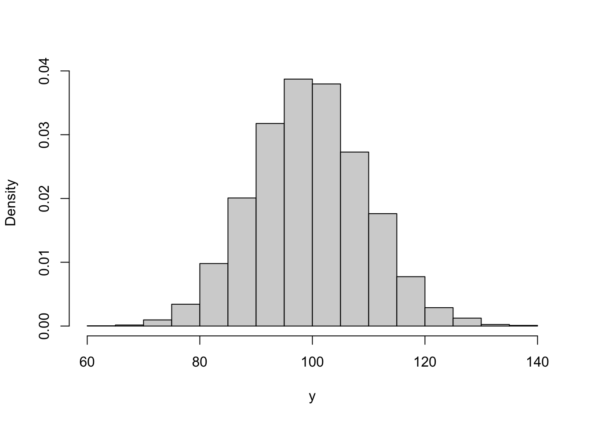

Chapter 2 Programming in R
2.1 Random Numbers, For Loops and R
This first computer lab is about getting used to R. The first step is to download R and Rstudio.
The easiest way to learn R is by using it to solve problems. The lab contains four exercises and three ways of approaching the exercise (easy, medium and hard). If you’re new to R, use the easy approach and copy and paste the code straight into R – you’ll need to fill in a few blanks though. If you’ve used R before, or a similar programming language, stick to the medium and hard approaches. This is also an exercise in using Google. Googling around a problem of for specific commands can allow you to quickly find examples (most likely on Stack Overflow) with code you can use.
There are three aims of this lab:
- Getting used to programming in R.
- Generating random numbers in R.
- Creating for loops in R.
Example 2.1 Computationally verify that the Poisson distribution with rate \(\lambda = 100\) can be approximated by a normal distribution with mean and variance 100.
To do this, we can generate lots of samples from a Poisson(100) distribution and plot them on top of the density function of the normal distribution with mean and variance 100.
R has four built-in functions for working with distributions. They take the form rdist, ddist, pdist, and qdist. You replace the dist part with the name of the distribution you want to work with, for example unif for the uniform distribution or norm for the normal distribution. As we are working with the the Poisson distribution, we will use pois. The prefixes allow you to work with the distribution in different ways: r gives you random numbers sampled form the distribution, d evaluates the density function, p evaluates the density function, and q evaluates the inverse density function (or quantile function).
The function rpois allows us to generate samples from a Poisson distribution. We store 10,000 samples in a vector y by calling
We can generate a histogram of y using the hist command. Setting freq = FALSE, makes R plot a density histogram instead of a frequency histogram. Typing ?hist will give you more information about this

The last thing to do is to plot the normal density on top. There are a couple of ways of doing this. The way below generates a uniform grid of points and then evaluates the density at each point. Finally, it adds a line graph of these densities on top.
x <- seq(from = 50, to = 150, by = 1) #create uniform grid on [50, 150]
density <- dnorm(x, mean = 100, sd = sqrt(100)) #compute density
#plot together
hist(y, freq = FALSE, xlab = "y", main = "")
lines(x, density)The two match up well, showing the normal distribution is a suitable approximation here.
Over the next two sessions, you will need to solve the following four problems in R. You can type ? before any function in R (e.g. ?rnorm) to bring up R’s helpage on the function. Googling can also bring up lots of information, possible solutions and support.
Exercise 2.1 The changes in the Birmingham stock exchange each day can be modelled using a normal distribution. The price on day \(i\), \(X_i\) is given by \[ X_i = \alpha X_{i-1}, \qquad \alpha \sim N(1.001, 0.005^2). \] The index begins at \(X_0 = 100\). Investigate the distribution of the value of the stock market on days 50 and 100.
Hard. Use a simulation method to generate the relevant distributions.
Medium. Simulate the value for \(\alpha\) for each of the 100 days and use the cumprod command to plot a trajectory. Use a for loop to repeat this 100 times and investigate the distribution of the value of the stock market on days 50 and 100.
Easy. Fill in the blanks in the following code.
# Plot one ----------------------------------------------------------------
x <- rnorm(n = , mean = , sd = ) #Simulate daily change for 100 days
plot(, type = 'l') #multiply each day by the previous days
# Plot 100 realisations ---------------------------------------------------
market.index <- matrix(NA, 100, 100) #Initialise a matrix to store trajectories
for(i in 1:100){
x <- rnorm(n = , mean = , sd = )
market.index [, i] <-
}
#Plot all trajectories
matplot(market.index, type = 'l')
#Get distribution of days 50 and 100
hist()
hist()
quantile(, )
quantile(, )Exercise 2.2 You are an avid lottery player and play the lottery twice a week, every week for 50 years (a total of 5,200 times). The lottery has 50 balls labeled 1, …, 50 and you play the same 6 numbers each time. Six out of the 50 balls are chosen uniformly at random and the prize money is shown in the table below.
| Numbers Matched | Prize Amount |
|---|---|
| 0-2 | £0 |
| 3 | £30 |
| 4 | £140 |
| 5 | £1,750 |
| 6 | £1,000,000 |
It costs you £2 to play each time. Simulate one set of 5,200 draws. How much do you win? What is your total profit/loss?
Hard. Use a for loop and sequence of if else statements to generate your prize winnings.
Medium. Use a for loop to generate the lottery numbers and prize winnings for each draw. Use the sample function to generate a set of lottery numbers and check they match against your numbers using the %in% function. Finally, use if else statements to check how much you have won each time.
Easy. Fill in the blanks in the following code.
my.numbers <-
#For loop to generate lottery numbers and prize winnings
prize <- numeric(5200)
for(i in 1:5200){
#Generate lottery numbers
draw <- sample(, )
#Check how many match my numbers
numbers.matched <- #use %in% function
#Compute prize winings
if(numbers.matched < 3)
prize[i] <- 0
else if()
prize[i] <- 30
else if()
prize[i] <- 140
else if()
prize[i] <- 1750
else
prize[i] <- 1000000
}
#Summarise prize winnings
table(prize)
hist(prize)
sum(prize) - 2*5200Exercise 2.3 Estimate \(\pi\).
Hard. Use a rejection sampling algorithm.
Medium. Generate lots of points \((x, y)\) on the unit square \([0, 1]^2\). Check each point to see if it lies within the unit circle. Use the proportion of points that lie within the unit circle to estimate \(\pi\).
Easy. Fill in the blanks in the following code.
#Sample on unit square
N <- 10000 #number of points
x <- #sample N points uniformly at random on [0, 1]
y <- #sample N points uniformly at random on [0, 1]
#Estimate pi
r.sq <- x^2 + y^2 #check how far from origin
number.inside.circle <- #count how many points inside unit cirlce
pi.estimate <-
#Plot points
par(pty = "s") #make sure plot is square
plot(x, y, cex = 0.1) #plot points
theta <- seq(0, pi/2, 0.01) #plot unit circle
lines(x = cos(theta), y = sin(theta), col = "red")Extra. Use a for loop to repeat this for \(N = \{1, \ldots, 10000\}\). Record the estimate for \(\pi\) for each value and the relative error.
Exercise 2.4 A linear congruential generator (LCG) is a simple algorithm for generating random integers. Given a starting value \(X_0\), it generates a sequence of integers according to \[ X_{i+1} = a X_i + c \mod m. \] Software that generates numbers using an LCG Setting \(a = 3\), \(c = 2\), \(m = 7\) and \(X_0 = 0\), generate 20 samples from this generator.
Investigate the ‘randomness’ of this generator by creating the delay plot, where \(X_{i-1}\) is plotted against \(X_{i}\)
One way to improve the quality of these generators is to shuffle the sequence generated. Generate rate two sequences \(X\) and \(Y\) from two different LCGs, and report the shuffled sequence \(Z_j = X_{Y_j}\). For the sequence \(Y\) use the values \(a = 5\), \(c = 1\), \(m = 8\) and \(Y_0 = 2\).
As the past two exercises show, LCGs are notoriously poor. in the 1960s and 70s, RANDU was a widely used LCG developed by IBM. According to Wikipedia > IBM’s RANDU is widely considered to be one of the most ill-conceived random number generators ever designed, and was described as “truly horrible” by Donald Knuth.
The RANDU LCG uses \(a = 2^{16} + 3\), \(c = 0\), \(m = 2^{31}\) and \(Y_0 = 1\). Generate a sequence of 10,000 pseudorandom variables from the RANDU LCG and create the delay plot.
The delay plot seems to show little relationship between \(X_{i}\) and \(X_{i+1}\). The third order delay plot is a 3d-plot with coordinate \((X_i, X_{i+1}, X_{i+2})\) and this plot shows a different picture. Create this plot using the code
#install.packages("scatterplot3d") #you may need to install this package
scatterplot3d::scatterplot3d(X[1:9998], X[2:9999], X[3:10000], angle=154,
xlab = expression(X[i]), ylab = expression(X[i+1]), zlab = expression(X[i+2]))This is what makes the RANDU LCG so poor. Write down \(X_{i+1}\) and \(X_{i+2}\) in terms of \(X_i\). Show that \(X_{i+2} = \alpha X_{i+1} + \beta X_{i}\).
Hard. Use a for loop to construct sequences from the LCGs \(X\) and \(Y\).
Medium. Create a for loop to generate the value for the sequence \(X_i\) for \(i = 1, \ldots, 20\). Modular arithmetic can be performed using the %% function. Create a new for loop to construct the sequence \(Y\). To shuffle the sequence \(X\) using \(Y\), you will need to subset \(X\) by \(Y\) in R.
Easy. Fill in the blanks in the code below
# 1. Shuffling ---------------------------------------------------------------
X <- numeric(21) #initialise vector to store X
#Set values for LCG
a <-
c <-
m <-
X[1]<-
#Run Generator
for(i in 2:21){
X[i] <-
}
X
#Delay plot
plot( , , xlab = expression(X[i-1]), ylab = expression(X[i]), type = 'l')
# 2. Shuffling ---------------------------------------------------------------
Y <- numeric(21) #initialise vector to store Y
#Set values for LCG
a <-
c <-
m <-
Y[1]<-
#Run Generator
for(i in 2:50){
Y[i] <-
}
#report sequence
Y
X[Y]
#Plot delay plot
plot(x = ,y = , xlab = expression(Z[i-1]), ylab = expression(Z[i]), type = 'l')
2.2 Functions in R
The purpose of this lab is to learn how to write functions is R. Functions are wrappers that allow you to easily repeat commands, as well as customise specific pieces of code.
2.2.1 Built in commands
R has many build in commands and you used these in Computer Lab I. An example is the runif command from the second exercise. This function generates random numbers from an interval. The code chunk below shows it in action:
## [1] -0.1380692 -0.7814054 -0.6685599 0.6182115 -0.4346018 0.4188106
## [7] 0.7069304 -0.3426697 -0.6814300 0.5904823The functions has three arguments: n the number of samples to be generated, min the lower limit of the interval, max the upper limit of the interval. In the code chunk above 10 random numbers were generated from the interval [-1, 1]. In R, you don’t need to label the arguments, so the following will sample the same number of samples from the same interval:
u <- runif(10, -1, 1)Although in most cases it helps to label the arguments for readability and avoiding undefined behaviour. Note that if you decide to omit the argument names in the function call, the arguments must appear exactly in the order defined by the function prototype (check the documentation ?function for specific cases).
2.2.2 User defined functions
In many cases, we will need to repeat the same piece of code over and over again, or we will need to run it again with different values. In this case, we can write our own function. In R, there are two ways to type your own function. The first is to write a full function definition. The basic template is
name.of.function <- function(arguments){
#do something
#produce result
return(result)
}The second way is an in-line function, which is sometimes useful for short functions. The template is
name.of.function <- function(arguments) #do somethingIn this module, we’re going to use the full function way of writing functions.
Example 2.2 In this example, we’re going to write a function to evaluate the normal density function. The density function is given by \[ \pi(x \mid \mu, \sigma^2) = \frac{1}{\sqrt{2\pi\sigma^2}}e^{\left\{-\frac{1}{2\sigma^2}(x-\mu)^2\right\}}. \]
We will need our function to take three arguments, the value at which the density function needs to be evaluated, and the mean and standard deviation of the distribution.
normal.density <- function(x, mu, sigma){
fraction.term <- 1/sqrt(2*pi*sigma^2)
exponent.term <- -1/(2*sigma^2)*(x-mu)^2
result <- fraction.term*exp(exponent.term)
return(result)
}We have split up the density into two parts to make it easier to code up and read. R has its own inbuilt normal density function dnorm and we can compare our function against R’s. Although R’s is faster and more reliable, we should get the same results.
## [1] 0.4839414## [1] 0.4839414Why might R’s function be faster and more reliable than ours?
Exercise 2.5 Write a function to evaluate the log of the probability density function of a Poisson distribution with rate \(\lambda\).
Exercise 2.6 Consider the stock exchange problem in Exercise 2.1. Write a function that simulates 100 days of the stock exchange. Use the replicate function to call this function 10,000 times.
2.3 Good Coding Practices
In the past two labs, we’ve written code to solve different problems. In this lab, we’re going to take a step back and think about what good R code does and doesn’t look like.
2.3.1 Code Style
Code should be both efficient and easy to read. In most cases it’s better to write code that’s easy to read and less efficient, than highly efficient code that’s difficult to read. Some basic principles to make code easy to read are:
- Write short functions names, e.g.
buy.loot.boxis better thanplayer.buys.one.loot.booxorblb. - Document and comment code. In R comments start with
#. - Multiple short functions are better than long functions that do multiple things.
- Be consistent.
Example 2.3 Review the tidyverse Style Guide.
Example 2.4 Review Google’s R Style Guide.
One way to ensure code style is consistent and bug free is to carry out code reviews. These are common both in academia and industry. A code review is where someone else goes through your code line-by-line ensuring it conforms to the company style and doesn’t have any bugs.
Exercise 2.7 The following code is for Exercises 2.1 about the stock exchange. Restyle the code so it is easy to read.
# Plot one ----------------------------------------------------------------
rnorm(100,1.001,0.5) -> x
plot(100*cumprod(x),type ='l')
# Plot 100 realisations ---------------------------------------------------
X <- matrix(NA, 100, 100)
for(i in 1:100){
x <- rnorm(100, 1.001, 0.005)
X[,i] <- 100*cumprod(x)
}
matplot(X,type ='l')
hist(X[50,]);hist(X[100,]);quantile(X[50,], c(0.25, 0.5, 0.75));quantile(X[100,], c(0.25, 0.5, 0.75))Exercise 2.8 In pairs or groups, carry out a code review for one of your solutions to an exercise from a previous lab. Remember to
- Make sure the coding style is consistent.
- Identify any bugs.
- Be respectful and constructive in your feedback.